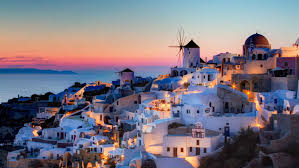
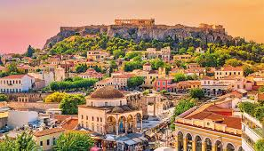
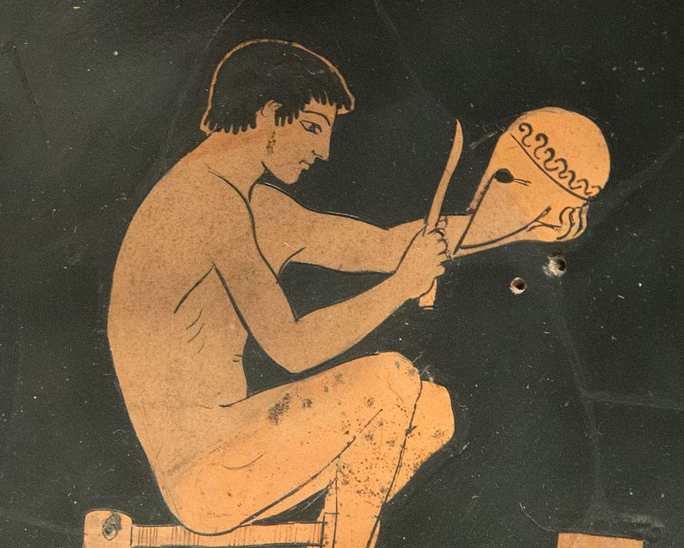
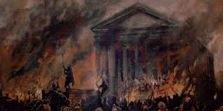
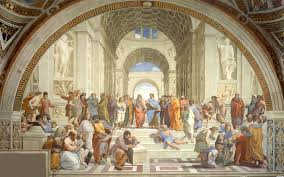
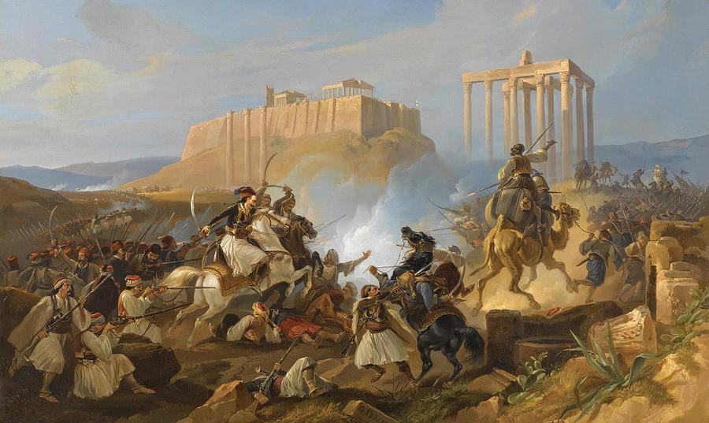

During the Republic of Greece

From an economic and cultural standpoint, Athens is the vibrant heart of modern Greece. In line with the country's modernization efforts, Athens has developed a distinct identity as a dynamic and global city. Under the leadership of Greece’s modern founders, Athens embraced a new identity in the post-war period; a fresh chapter of its history began. Following the turbulent years of occupation and conflict, Greece's path to independence led to the establishment of the Hellenic Republic. With the foundation of the Republic of Greece, Athens underwent significant transformations across many aspects. After centuries of ancient glory, the city embraced modernization, positioning itself uniquely in the global stage. Athens has since developed into a center of culture, innovation, and politics. From an economic and cultural standpoint, Athens is a leading force in Greece’s development. Thanks to its unparalleled historical heritage, Athens remains a prominent city, not just for Greece, but in the eyes of the world. Serving as a hub for international political, cultural, and business organizations, Athens continues to rise as a top global city. Moreover, Athens, Greece’s capital, has redefined its role from the cradle of civilization to a world-class center for trade, tourism, business, and culture.
New Athens and the Hellenic Republic
With the establishment of the Hellenic Republic, Athens underwent significant transformations, evolving into a modern city that honors its ancient legacy while embracing innovation. The city experienced a revitalization, reflecting Greece’s aspirations for progress in a rapidly changing world. As the capital of Greece, Athens has emerged as a dynamic center for culture, politics, and commerce, leading the country’s modernization efforts while retaining its deep-rooted historical significance. Today, Athens stands as a testament to the enduring spirit of Greek civilization, blending the old and new into a vibrant metropolis.Athens' Layout During the Republican Period
During the establishment of the Hellenic Republic, Athens underwent significant urban development and modernization. The city saw the expansion of its infrastructure, with new roads, public buildings, and institutions designed to reflect Greece’s emerging identity as a modern European state. While preserving its ancient landmarks, such as the Acropolis and the Parthenon, Athens began to grow beyond its historical boundaries, incorporating neoclassical architecture and contemporary urban planning. This period marked the transformation of Athens into a cosmopolitan capital, blending the richness of its past with the dynamic energy of the future.The Big Wave of New Residents in Athens

Following the establishment of the Hellenic Republic, Athens experienced a significant influx of new residents, particularly during the 19th and early 20th centuries. This wave of migration was driven by both internal movements from rural areas and the return of Greeks from across the diaspora, seeking opportunities in the growing capital. As the city expanded, it became a magnet for individuals from all walks of life, contributing to the cultural diversity and vibrant social fabric of modern Athens. This population shift played a crucial role in shaping the city's dynamic urban landscape and its transformation into a major center of commerce, education, and politics.
Before Athens Became the Capital of Greece
Before Athens became the capital of modern Greece, it was a powerful city-state at the heart of the ancient Greek world. Known as the cradle of democracy, philosophy, and the arts, Athens was a center of cultural and intellectual achievement. From its early days as a Mycenaean settlement to its rise as a dominant force in the ancient world, Athens played a pivotal role in shaping Western civilization. Its influence spread through its contributions to philosophy, architecture, and government, with figures like Socrates, Plato, and Aristotle leaving an indelible mark on history.First Civilizations in Athens
Athens, one of the world's oldest cities, was home to some of the earliest civilizations in history. The Mycenaean civilization, flourishing around 1600–1100 BCE, laid the foundations of Athens as a major center of culture and politics. Later, the city became a prominent hub during the Archaic and Classical periods, known for its contributions to philosophy, democracy, and the arts. The ancient Athenians established a society that profoundly influenced Western thought, with remarkable achievements in architecture, literature, and governance that continue to resonate today."Places to Witness the History of Athens
Athens is a living museum, offering a wealth of historical landmarks that take you through its rich past. The Acropolis, with its iconic Parthenon, remains the centerpiece of the city’s ancient heritage. The Ancient Agora, once the heart of Athenian public life, and the Temple of Olympian Zeus stand as magnificent reminders of the city's religious and political significance. The National Archaeological Museum showcases artifacts from the Mycenaean, Classical, and Hellenistic periods, while the Roman Agora and Hadrian’s Library reflect Athens’ role under Roman rule. Every corner of Athens reveals a chapter in the story of a civilization that shaped the world.Places to Witness the History of Athens
 The legends surrounding Athens add a layer of mystique to its ancient history, blending myth with reality. One of the most famous tales is the story of the Acropolis, where the goddess Athena, after whom the city is named, is said to have gifted the olive tree to the Athenians, symbolizing peace and prosperity. Another story revolves around the Temple of Olympian Zeus, where it is believed that the gods once gathered, and the temple's grand scale was meant to reflect their eternal power. A more tragic tale comes from the ancient theater of Dionysus, where it’s said that the great playwright Euripides wrote many of his iconic works, including his most heart-wrenching tragedies. The theater is not just a symbol of artistic achievement, but a place where many ancient Greek myths were performed, forever intertwining the city’s history with the realm of the gods. Another well-known legend is the story of Theseus and the Minotaur. According to myth, the labyrinth was built on the island of Crete to imprison the Minotaur, a fearsome creature. Theseus, the Athenian hero, famously defeated the beast and returned to Athens, ensuring the city's glory. These and many other fascinating legends have shaped the identity of Athens, making the city not just a historical treasure, but a place where mythology and history come to life. We strongly recommend visiting these ancient sites, as they promise to captivate you with their stories and awe- inspiring beauty.The Athens Era
Athens, the capital of Greece, has been a pivotal city throughout history, serving as the heart of ancient Greek civilization, the birthplace of democracy, and the cradle of Western philosophy. Its strategic location in the Mediterranean has made it an important center of culture and trade for millennia. Today, Athens remains a city of wonders, where the ancient world and modernity coexist, inspiring awe and curiosity in all who visit.Establishment and Classical Period of Athens
Athens, established as one of the most influential city-states in ancient Greece, rose to prominence during the Classical period. In the 5th century BCE, under the leadership of figures like Pericles, Athens became the center of art, philosophy, and democracy. The city's influence expanded as it became the birthplace of democratic governance, giving voice to citizens and shaping political thought for centuries to come. The Acropolis, with its iconic Parthenon, symbolized the power and cultural achievements of Athens, while philosophers like Socrates, Plato, and Aristotle laid the foundations for Western philosophy.HISTORY OF ATHENS

Athens has been a key city in the ancient world, with a history that spans over three millennia. Initially an important Mycenaean settlement, Athens rose to prominence during the Archaic period, eventually becoming a powerful city-state by the 5th century BCE. Under the leadership of figures like Pericles, Athens flourished as the heart of Greek culture, democracy, philosophy, and art, becoming a beacon of Western civilization. In 338 BCE, Athens lost its independence after being defeated by Macedon at the Battle of Chaeronea. The city then became part of the Macedonian Empire, but its intellectual influence remained significant. During the Roman period, which began in 146 BCE, Athens continued to be a respected center of learning. The Romans admired Greek culture, and many Roman emperors, including Hadrian, were patrons of Athens. Hadrian even built structures like the Temple of Olympian Zeus, which marked a period of prosperity for the city. Athens fell under the control of the Byzantine Empire after the division of the Roman Empire in 395 CE. Although it was no longer a political capital, Athens retained its importance as a cultural and intellectual hub during the Byzantine period. The rise of Christianity led to the construction of many churches, and the city began to reflect Byzantine religious influence. In 1204, Athens was captured by the Crusaders during the Fourth Crusade and came under Latin rule. The city eventually fell to the Ottoman Empire in 1456, and Athens remained under Ottoman control for nearly 400 years. During this time, many of Athens' ancient monuments were repurposed, and the city's role as a cultural center declined. Athens regained its importance in the 19th century, when it became the capital of the newly independent Kingdom of Greece in 1834. The city underwent significant modernization and restoration of its ancient landmarks, while embracing its new identity as the heart of modern Greece. Today, Athens continues to be a vibrant metropolis, rich in history and culture, drawing visitors from around the world to experience its enduring legacy.
Latin Occupation(1204 CE–1456 CE)
After the Fourth Crusade in 1204, Athens came under Latin control, becoming part of the Duchy of Athens. The city was ruled by French and Italian knights, with the first Duke being Otto de la Roche. During this period, Latin rulers introduced Catholicism, converted churches, and changed the city’s governance. Tensions between the Latin rulers and the local Greek population were common. The Duchy weakened over time, eventually falling to the Ottoman Empire in 1456, ending nearly 250 years of Latin rule.
Roman Empire Byzantine After Latin Occupation
After the Latin Occupation ended in 1456, Athens transitioned to Ottoman rule, but its history under the Roman and Byzantine Empires left a lasting legacy. Under Roman rule (146 BCE–330 CE), Athens remained a center of philosophy and culture, with emperors like Hadrian building monumental structures like the Temple of Olympian Zeus. During the Byzantine era (330 CE–1204 CE), Athens declined as political power shifted to Constantinople, but it retained regional importance. Christianity flourished, and ancient temples, including the Parthenon, were converted into churches, marking a significant transformation in the city's religious and cultural identityCollapse
Athens' decline began after its defeat in the Peloponnesian War (404 BCE), losing political dominance to Sparta and later Macedonia. While it remained a cultural hub during the Roman and Byzantine periods, its importance waned as power shifted to Constantinople. Following the Latin Occupation (1204–1456) and Ottoman rule (1456–1834), Athens fell into obscurity until it was revived as the capital of modern Greece in 1834.
Post-Golden Age Decline (5th–4th Century BCE):
Athens' golden age ended with its defeat in the Peloponnesian War (431–404 BCE) against Sparta. The war left Athens weakened politically, economically, and militarily. The long conflict drained its resources, destroyed its fleet, and eroded its influence over the Delian League. After the war, Sparta imposed the Thirty Tyrants, a pro-Spartan oligarchy that ruled Athens harshly for a brief period before democracy was restored. However, Athens never regained its former power as other Greek states rose to prominence.Hellenistic and Roman Periods (323 BCE–330 CE)
After Alexander’s death, Athens struggled to assert its independence during the wars of the Diadochi (Alexander’s successors). It became part of the Hellenistic world, often overshadowed by larger cities like Alexandria. In 146 BCE, Athens fell under Roman control. Although it lost political autonomy, the Romans admired Greek culture, and Athens thrived as a center of philosophy and education, attracting figures like Cicero and Emperor Hadrian, who contributed to its infrastructure. Despite this, its influence continued to wane as the Roman Empire expanded.
Byzantine Era (330–1204 CE)
During the Byzantine period, Athens' importance further declined as Constantinople became the political and cultural center of the Eastern Roman Empire. Christianity became the dominant religion, leading to the conversion of many ancient temples, including the Parthenon, into churches. The city became a provincial town, overshadowed by other Byzantine centers.